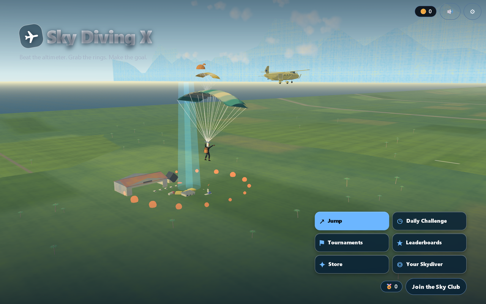
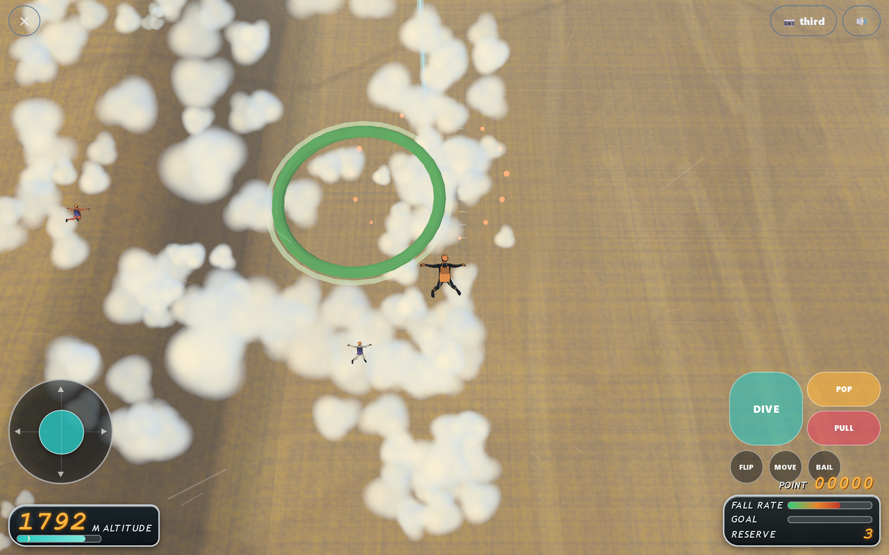
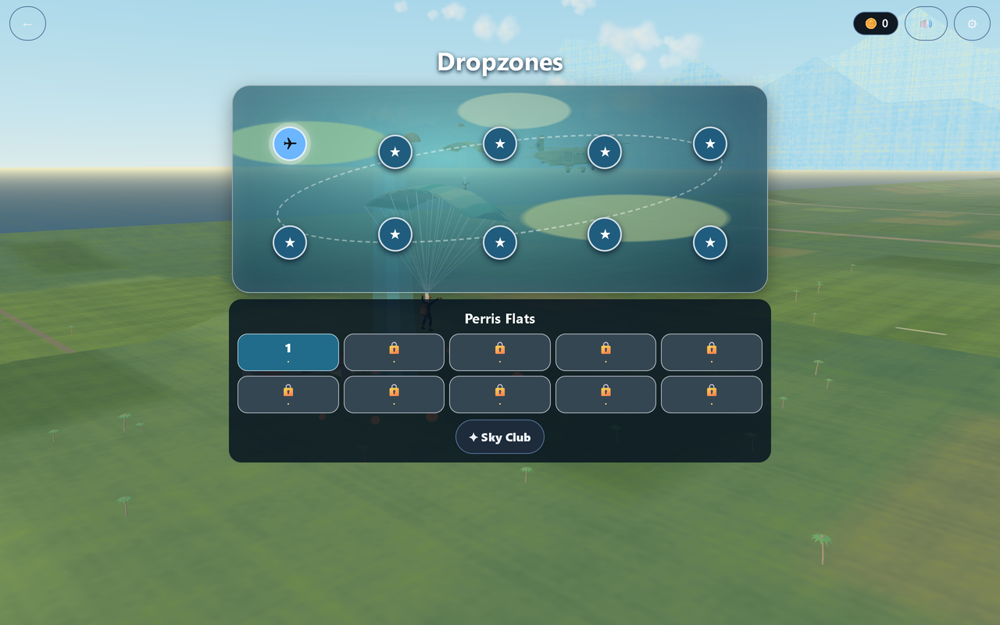
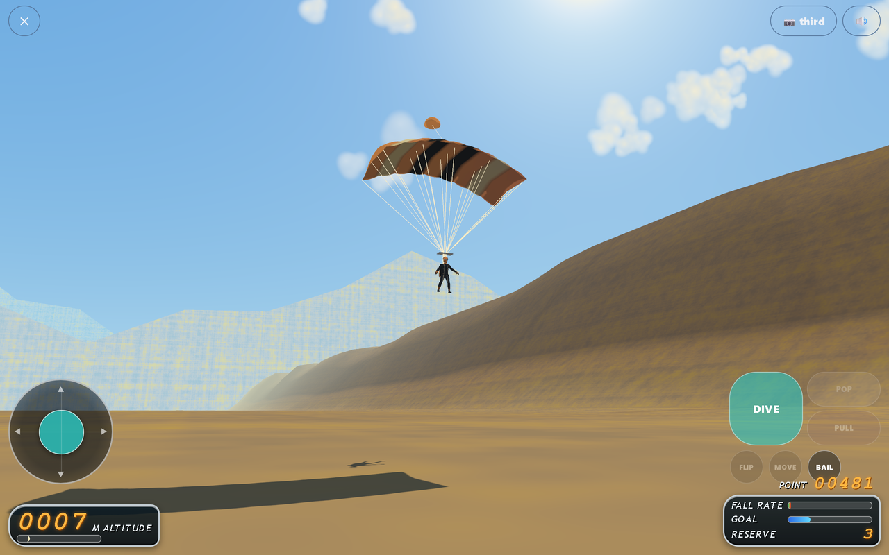

Release 1.1.6
A clearer flight. A smoother finish.
The new view starts before you jump: an animated panorama, a map built around jump points, and flight controls that leave the sky in view. Pick Arcade or Realistic flight in Settings, then learn steering, wind, parachute opening and the final approach with paused first-jump guidance.

The new menu brings the aircraft, parachutes and landing area into view.

A speed-responsive camera and compact controls keep the jump in view.

Explore dropzones and choose your next jump from the arcade map.

A smooth ground view carries the final approach through touchdown.
See the before and after
The previous release and the redesigned game, shown at matching viewport sizes: menu, jump camera and landing approach.
Keep climbing
Ten dropzones, 100 jumps, daily challenges, tournaments and your accumulated skydiving distance. Find the leaderboard and see how to join.